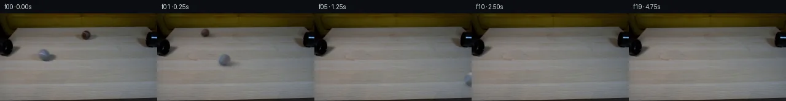

![首帧]()

Round 00
2026-11-05T19:03:15.952112+00:00像素候选变化代码 +203/−0inspection 更新
pixels 8ff483dda4137d1b · code 9806ae76238d63ec
查看本轮 generate.py 真实 diff
--- previous/generate.py
+++ current/generate.py
@@ -0,0 +1,203 @@
+"""Local photographic pixel continuation; no external models or scene assets."""
+from pathlib import Path
+import json
+import numpy as np
+from PIL import Image, ImageDraw
+from scipy.ndimage import distance_transform_edt, gaussian_filter, map_coordinates
+from artifact_io import save
+
+ROOT = Path(__file__).resolve().parent
+SOURCE = np.asarray(Image.open(ROOT / 'first_frame.png').convert('RGB'), dtype=np.float64)
+H, W = SOURCE.shape[:2]
+YY, XX = np.mgrid[:H, :W]
+
+
+def ellipse(cx, cy, rx, ry):
+ return ((XX-cx)/rx)**2 + ((YY-cy)/ry)**2 <= 1
+
+
+def repair_table(image, mask, shift):
+ """Clone same-row wood grain, match its local illumination, feather the edge."""
+ donor = image[:, np.clip(np.arange(W)+shift, 0, W-1)].copy()
+ outside = distance_transform_edt(~mask)
+ ring = (outside > 1) & (outside < 7)
+ # A low-order illumination match leaves the donor's fine wood grain intact.
+ cx, cy = XX[mask].mean(), YY[mask].mean()
+ x, y = (XX-cx)/30, (YY-cy)/15
+ basis = np.stack([np.ones_like(x), x, y, x*x, x*y], axis=-1)
+ coeff = np.linalg.lstsq(basis[ring], (image-donor)[ring], rcond=None)[0]
+ patch = np.clip(donor + basis @ coeff, 0, 255)
+ weight = np.clip(distance_transform_edt(mask)/2.2, 0, 1)
+ return image*(1-weight[..., None]) + patch*weight[..., None]
+
+
+grey_mask = ellipse(71.7, 68.0, 11.8, 11.5) | ellipse(79.5, 73.0, 15.8, 7.4) | ellipse(60, 70, 11, 5.5)
+brown_mask = ellipse(140.0, 35.7, 9.9, 9.5) | ellipse(147.0, 39, 15.5, 6.5) | ellipse(132, 39, 10, 5)
+PLATE = repair_table(SOURCE, grey_mask, 43)
+PLATE = repair_table(PLATE, brown_mask, -38)
+
+LIGHT = np.array([-0.46, -0.67, 0.58])
+LIGHT /= np.linalg.norm(LIGHT)
+
+
+def illumination(normals):
+ return 0.64 + 0.36*np.clip(normals @ LIGHT, 0, 1)
+
+
+BALLS = {
+ 'grey': dict(center=(71.7, 68.0), radius=9.4, vx=150.0, ax=-5.0,
+ slope=(68.0-55.0)/(71.7-12.0), depth=0.00115,
+ axis=np.array([-0.10, 0.54, 0.836]), shadow_strength=0.33),
+ 'brown': dict(center=(140.0, 35.7), radius=7.1, vx=-250.0, ax=5.0,
+ slope=(35.7-43.0)/(140.0-243.0), depth=0.0007,
+ axis=np.array([-0.045, 0.54, 0.840]), shadow_strength=0.31),
+}
+
+
+def state(name, t):
+ b = BALLS[name]
+ dx = b['vx']*t + 0.5*b['ax']*t*t
+ x = b['center'][0] + dx
+ y = b['center'][1] + b['slope']*dx
+ r = b['radius']*(1+b['depth']*dx)
+ drop = 0.0
+ if name == 'brown':
+ # The receding track intersects the visible left table edge near x=25.
+ edge_time = 0.461
+ dt = max(0.0, t-edge_time)
+ drop = 0.5*1400*dt*dt
+ y += drop
+ # Integrate rolling angle with the slowly varying projected radius.
+ angle = np.log(max(0.3, 1+b['depth']*dx))/(b['radius']*b['depth'])
+ return x, y, r, angle, drop
+
+
+def rotation(axis, angle):
+ axis = axis/np.linalg.norm(axis)
+ x, y, z = axis
+ cross = np.array([[0, -z, y], [z, 0, -x], [-y, x, 0]])
+ return np.eye(3)*np.cos(angle) + (1-np.cos(angle))*np.outer(axis, axis) + np.sin(angle)*cross
+
+
+def sphere_layer(name, t):
+ """Reproject source sphere texture through an analytic rolling rotation."""
+ b = BALLS[name]
+ cx, cy, radius, angle, drop = state(name, t)
+ color = np.zeros_like(SOURCE)
+ alpha = np.zeros((H, W), dtype=float)
… diff truncated; 116 more lines …